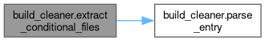
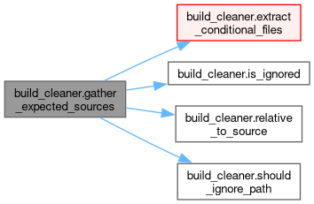
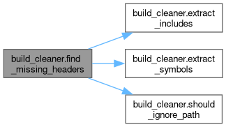
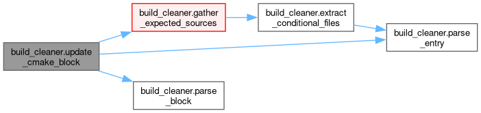
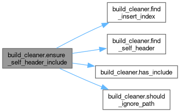
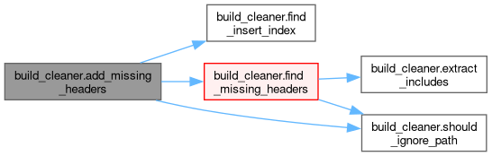
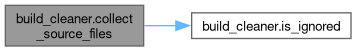
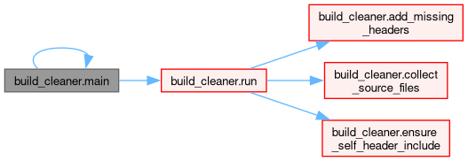

|
yaze 0.3.2
Link to the Past ROM Editor
|
|

| |
|
yaze 0.3.2
Link to the Past ROM Editor
|
|
|
| |
Classes | |
| class | CMakeSourceBlock |
| class | DirectorySpec |
Functions | |
| load_gitignore () | |
| bool | is_ignored (Path path, gitignore_spec) |
| List[CMakeSourceBlock] | discover_cmake_libraries () |
| Path | relative_to_source (Path path) |
| int | parse_block (List[str] lines, int start_idx) |
| Optional[str] | parse_entry (str line) |
| Set[str] | extract_conditional_files (Path cmake_path, str variable) |
| List[str] | gather_expected_sources (CMakeSourceBlock block, Any gitignore_spec=None) |
| bool | should_ignore_path (Path path) |
| Set[str] | extract_includes (Path file_path) |
| Set[str] | extract_symbols (Path file_path) |
| List[str] | find_missing_headers (Path source) |
| List[str] | find_conditional_blocks_after (List[str] cmake_lines, int end_idx, str variable) |
| bool | update_cmake_block (CMakeSourceBlock block, bool dry_run, Any gitignore_spec=None) |
| Optional[Path] | find_self_header (Path source) |
| bool | has_include (Sequence[str] lines, Iterable[str] header_variants) |
| int | find_insert_index (List[str] lines) |
| bool | ensure_self_header_include (Path source, bool dry_run) |
| bool | add_missing_headers (Path source, bool dry_run, bool iwyu_mode) |
| Set[Path] | collect_source_files (List[CMakeSourceBlock] config, Any gitignore_spec=None) |
| List[CMakeSourceBlock] | get_config (bool auto_discover=False) |
| int | run (bool dry_run, bool cmake_only, bool includes_only, bool iwyu_mode, bool auto_discover) |
| int | main () |
Variables | |
| bool | HAS_PATHSPEC = True |
| PROJECT_ROOT = Path(__file__).resolve().parent.parent | |
| str | SOURCE_ROOT = PROJECT_ROOT / "src" |
| tuple | SUPPORTED_EXTENSIONS = (".cc", ".c", ".cpp", ".cxx", ".mm") |
| tuple | HEADER_EXTENSIONS = (".h", ".hh", ".hpp", ".hxx") |
| str | BUILD_CLEANER_IGNORE_TOKEN = "build_cleaner:ignore" |
| dict | COMMON_HEADERS |
| tuple | STATIC_CONFIG |
Automate source list maintenance and self-header includes for YAZE.
| build_cleaner.load_gitignore | ( | ) |
Load .gitignore patterns into a pathspec matcher.
Definition at line 62 of file build_cleaner.py.
Referenced by run().
| bool build_cleaner.is_ignored | ( | Path | path, |
| gitignore_spec | |||
| ) |
Check if a path should be ignored based on .gitignore patterns.
Definition at line 80 of file build_cleaner.py.
Referenced by collect_source_files(), and gather_expected_sources().
| List[CMakeSourceBlock] build_cleaner.discover_cmake_libraries | ( | ) |
Auto-discover CMake library files that explicitly opt-in to auto-maintenance. Looks for marker comments like: - "# build_cleaner:auto-maintain" - "# auto-maintained by build_cleaner.py" - "# AUTO-MAINTAINED" Only source lists with these markers will be updated. Supports decomposed libraries where one cmake file defines multiple PREFIX_SUBDIR_SRC variables (e.g., GFX_TYPES_SRC, GFX_BACKEND_SRC). Automatically scans subdirectories.
Definition at line 92 of file build_cleaner.py.
Referenced by get_config().
| Path build_cleaner.relative_to_source | ( | Path | path | ) |
Definition at line 329 of file build_cleaner.py.
Referenced by gather_expected_sources().
| int build_cleaner.parse_block | ( | List[str] | lines, |
| int | start_idx | ||
| ) |
Return index of the closing ')' line for a set/list block.
Definition at line 333 of file build_cleaner.py.
Referenced by update_cmake_block().
| Optional[str] build_cleaner.parse_entry | ( | str | line | ) |
Definition at line 341 of file build_cleaner.py.
Referenced by extract_conditional_files(), and update_cmake_block().
| Set[str] build_cleaner.extract_conditional_files | ( | Path | cmake_path, |
| str | variable | ||
| ) |
Extract files that are added to the variable via conditional blocks (if/endif).
Definition at line 354 of file build_cleaner.py.
References parse_entry().
Referenced by gather_expected_sources().

| List[str] build_cleaner.gather_expected_sources | ( | CMakeSourceBlock | block, |
| Any | gitignore_spec = None |
||
| ) |
Definition at line 407 of file build_cleaner.py.
References extract_conditional_files(), is_ignored(), relative_to_source(), and should_ignore_path().
Referenced by update_cmake_block().

| bool build_cleaner.should_ignore_path | ( | Path | path | ) |
Definition at line 436 of file build_cleaner.py.
Referenced by add_missing_headers(), ensure_self_header_include(), find_missing_headers(), and gather_expected_sources().
| Set[str] build_cleaner.extract_includes | ( | Path | file_path | ) |
Extract all #include statements from a source file.
Definition at line 445 of file build_cleaner.py.
Referenced by find_missing_headers().
| Set[str] build_cleaner.extract_symbols | ( | Path | file_path | ) |
Extract potential symbols/identifiers that might need headers.
Definition at line 460 of file build_cleaner.py.
Referenced by find_missing_headers().
| List[str] build_cleaner.find_missing_headers | ( | Path | source | ) |
Analyze a source file and suggest missing headers based on symbol usage.
Definition at line 480 of file build_cleaner.py.
References extract_includes(), extract_symbols(), and should_ignore_path().
Referenced by add_missing_headers().

| List[str] build_cleaner.find_conditional_blocks_after | ( | List[str] | cmake_lines, |
| int | end_idx, | ||
| str | variable | ||
| ) |
Find conditional blocks (if/endif) that append to the variable after the main set() block. Returns lines that should be preserved.
Definition at line 501 of file build_cleaner.py.
| bool build_cleaner.update_cmake_block | ( | CMakeSourceBlock | block, |
| bool | dry_run, | ||
| Any | gitignore_spec = None |
||
| ) |
Definition at line 556 of file build_cleaner.py.
References gather_expected_sources(), parse_block(), and parse_entry().
Referenced by run().

| Optional[Path] build_cleaner.find_self_header | ( | Path | source | ) |
Definition at line 645 of file build_cleaner.py.
Referenced by ensure_self_header_include().
| bool build_cleaner.has_include | ( | Sequence[str] | lines, |
| Iterable[str] | header_variants | ||
| ) |
Check if any line includes one of the header variants (with any path or quote style).
Definition at line 653 of file build_cleaner.py.
Referenced by ensure_self_header_include().
| int build_cleaner.find_insert_index | ( | List[str] | lines | ) |
Definition at line 676 of file build_cleaner.py.
Referenced by add_missing_headers(), and ensure_self_header_include().
| bool build_cleaner.ensure_self_header_include | ( | Path | source, |
| bool | dry_run | ||
| ) |
Ensure a source file includes its corresponding header file. Skips files that: - Are explicitly ignored - Have no corresponding header - Already include their header (in any path format) - Are test files or main entry points (typically don't include own header)
Definition at line 710 of file build_cleaner.py.
References find_insert_index(), find_self_header(), has_include(), and should_ignore_path().
Referenced by run().

| bool build_cleaner.add_missing_headers | ( | Path | source, |
| bool | dry_run, | ||
| bool | iwyu_mode | ||
| ) |
Add missing headers based on IWYU-style analysis.
Definition at line 779 of file build_cleaner.py.
References find_insert_index(), find_missing_headers(), and should_ignore_path().
Referenced by run().

| Set[Path] build_cleaner.collect_source_files | ( | List[CMakeSourceBlock] | config, |
| Any | gitignore_spec = None |
||
| ) |
Collect all source files from the given configuration, respecting .gitignore patterns.
Definition at line 815 of file build_cleaner.py.
References is_ignored().
Referenced by run().

| List[CMakeSourceBlock] build_cleaner.get_config | ( | bool | auto_discover = False | ) |
Get the full configuration, optionally including auto-discovered libraries.
Definition at line 834 of file build_cleaner.py.
References discover_cmake_libraries().
Referenced by run().
| int build_cleaner.run | ( | bool | dry_run, |
| bool | cmake_only, | ||
| bool | includes_only, | ||
| bool | iwyu_mode, | ||
| bool | auto_discover | ||
| ) |
Definition at line 852 of file build_cleaner.py.
References add_missing_headers(), collect_source_files(), ensure_self_header_include(), get_config(), load_gitignore(), and update_cmake_block().
Referenced by main().
| int build_cleaner.main | ( | ) |
Definition at line 901 of file build_cleaner.py.
Referenced by main().

| bool build_cleaner.HAS_PATHSPEC = True |
Definition at line 14 of file build_cleaner.py.
| build_cleaner.PROJECT_ROOT = Path(__file__).resolve().parent.parent |
Definition at line 20 of file build_cleaner.py.
| str build_cleaner.SOURCE_ROOT = PROJECT_ROOT / "src" |
Definition at line 21 of file build_cleaner.py.
| tuple build_cleaner.SUPPORTED_EXTENSIONS = (".cc", ".c", ".cpp", ".cxx", ".mm") |
Definition at line 23 of file build_cleaner.py.
| tuple build_cleaner.HEADER_EXTENSIONS = (".h", ".hh", ".hpp", ".hxx") |
Definition at line 24 of file build_cleaner.py.
| str build_cleaner.BUILD_CLEANER_IGNORE_TOKEN = "build_cleaner:ignore" |
Definition at line 25 of file build_cleaner.py.
| dict build_cleaner.COMMON_HEADERS |
Definition at line 28 of file build_cleaner.py.
| tuple build_cleaner.STATIC_CONFIG |
Definition at line 214 of file build_cleaner.py.